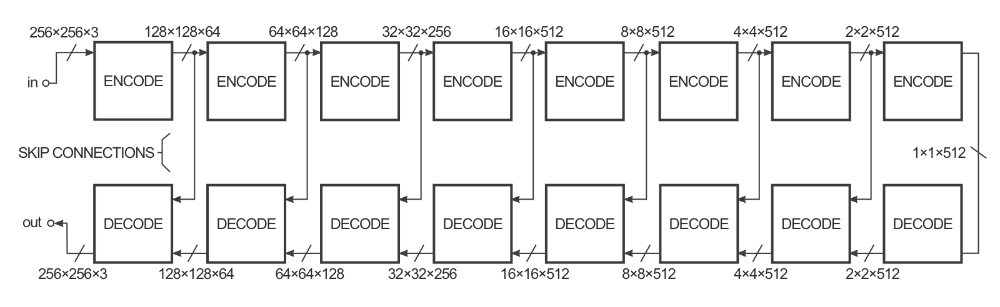

Neurocomputing
Generative Adversarial Networks
Generative models
- An autoencoder learns to first encode inputs in a latent space and then use a generative model to model the data distribution.
\mathcal{L}_\text{autoencoder}(\theta, \phi) = \mathbb{E}_{\mathbf{x} \in \mathcal{D}, \mathbf{z} \sim q_\phi(\mathbf{z}|\mathbf{x})} [ - \log p_\theta(\mathbf{z})]
- Couldn’t we learn a decoder using random noise as input but still learning the distribution of the data?
\mathcal{L}_\text{GAN}(\theta, \phi) = \mathbb{E}_{\mathbf{z} \sim \mathcal{N}(0, 1)} [ - \log p_\theta(\mathbf{z}) ]
- After all, this is how random numbers are generated: a uniform distribution of pseudo-random numbers is transformed into samples of another distribution using a mathematical formula.

Generative models
The problem is how to estimate the discrepancy between the true distribution and the generated distribution when we only have samples.
The Maximum Mean Discrepancy (MMD) approach allows to do that, but does not work very well in highly-dimensional spaces.

Generative adversarial network
The Generative Adversarial Network (GAN, Goodfellow at al., 2014) is a smart way of providing a loss function to the generative model. It is composed of two parts:
The Generator (or decoder) produces an image based on latent variables sampled from some random distribution (e.g. uniform or normal).
The Discriminator has to recognize real images from generated ones.

Generative adversarial network
The generator and the discriminator are in competition with each other.
The discriminator uses pure supervised learning: we know if the input is real or generated (binary classification) and train the discriminator accordingly.
The generator tries to fool the discriminator, without ever seeing the data!

DCGAN : Deep convolutional GAN
- DCGAN is the convolutional version of GAN, using transposed convolutions in the generator and concolutions with stride in the discriminator.

Generative adversarial networks
GAN are quite sensible to train: the discriminator should not become too good too early, otherwise there is no usable gradient for the generator.
In practice, one updates the generator more often than the discriminator.
There has been many improvements on GANs to stabilizes training:
Wasserstein GAN (relying on the Wasserstein distance instead of the log-likelihood).
f-GAN (relying on any f-divergence).
But the generator often collapses, i.e. outputs always the same image regarless the input noise.
Hyperparameter tuning is very difficult.

Conditional GAN (cGAN)

The generator can also get additional deterministic information to the latent space, not only the random vector z.
One can for example provide the label (class) in the context of supervised learning, allowing to generate many new examples of each class: data augmentation.
One could also provide the output of a pre-trained CNN (ResNet) to condition on images.
cGAN: text-to-image synthesis


pix2pix: image-to-image translation
cGAN can be extended to have an autoencoder-like architecture, allowing to generate images from images.
pix2pix is trained on pairs of similar images in different domains. The conversion from one domain to another is easy in one direction, but we want to learn the opposite.

pix2pix: image-to-image translation
The goal of the generator is to convert for example a black-and-white image into a colorized one.
It is a deep convolutional autoencoder, with convolutions with strides and transposed convolutions (SegNet-like).

pix2pix: image-to-image translation
- In practice, it has a U-Net architecture with skip connections to generate fine details.


pix2pix: image-to-image translation
The discriminator takes a pair of images as input: input/target or input/generated.
It does not output a single value real/fake, but a 30x30 “image” telling how real or fake is the corresponding patch of the unknown image.
Patches correspond to overlapping 70x70 regions of the 256x256 input image.
This type of discriminator is called a PatchGAN.

CycleGAN : Neural Style Transfer

Let’s suppose that we want to transform domain A (horses) into domain B (zebras) or the other way around.
The problem is that the two datasets are not paired, so we cannot provide targets to pix2pix (supervised learning).
If we just select any zebra target for a horse input, pix2pix would learn to generate zebras that do not correspond to the input horse (the shape may be lost).
How about we train a second GAN to generate the target?